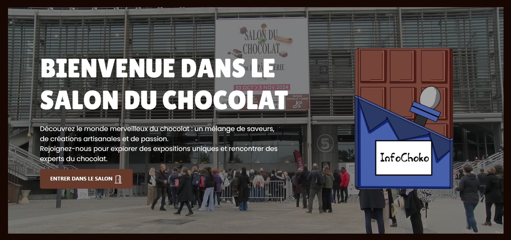

Salon du Chocolat

Création d’un webdocumentaire interactif dédié au Salon du Chocolat. Ce projet propose une expérience immersive combinant textes, audios, vidéos et interactions utilisateur. Réalisé en HTML et JavaScript, le site permet à l’utilisateur de découvrir l’événement de manière dynamique, en naviguant librement entre les différents contenus multimédias.
